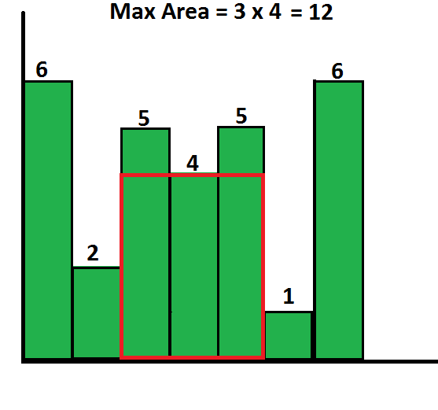
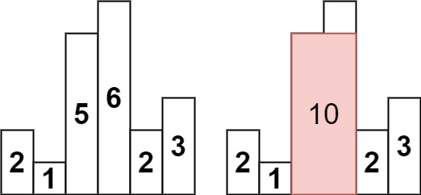
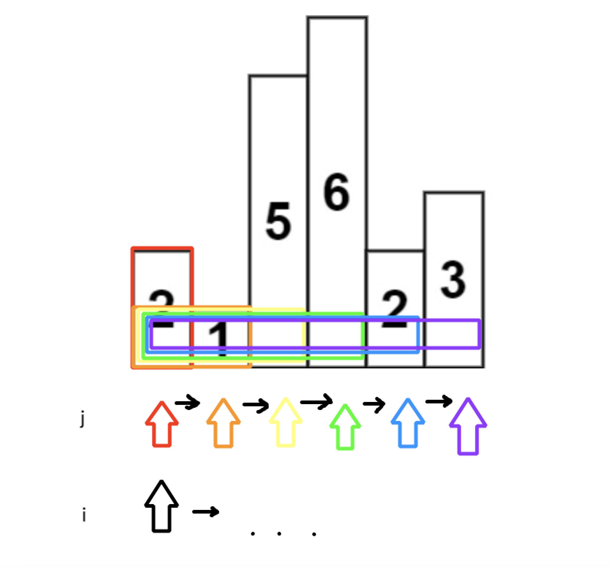
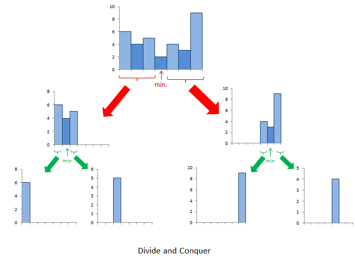

The problem reads as follows: Given an array of integers heights representing the histogram's bar height where the width of each bar is 1, return the area of the largest rectangle in the histogram.
Before I show you a solution, try to solve it yourself!
We will be using this classical example:

Input: heights = [2,1,5,6,2,3]
Output: 10
We will start with the most obvious approach. The intuition is that we enumerate over all bars with 2 pointers. We will need to keep a lowerbound height as we loop through since we are constrained by it.
Here is an example on iteration i = 0:

The idea is that for each bar, we expand our bounds to see the maximum area rectangle we can make. In code this looks like:
def largestRectangleArea(self, heights: List[int]) -> int:
n = len(heights)
max_area = 0
for i in range(n):
lower_bound = math.inf
for j in range(i, n):
lower_bound = min(lower_bound, heights[j])
rectangle = lower_bound * (j - i + 1)
max_area = max(max_area, rectangle)
return max_area
We need the +1 for inclusivity. For example, in the case that i = 0, j = 0, doing j - i = 0 - 0 = 0. The +1 is there to say that the bar actually has a width of 1. Another way to think about it is the +1 shifts the j pointer outside the bar (exclusive) so that when you subtract j - i, the difference is the width of the rectangle.
The time complexity will be $O(n^2)$ from the enumeration of the bars (i, j). This will be a bottleneck on large input sizes. Since we didn't allocate extra space, the space complexity is constant, $O(1)$.
A powerful idea is that the problem is comprised of subproblems. This is known as Divide and Conquer. We can break our max area down into 3 subproblems:
Here is a visual provided by the LeetCode editorial:

The core idea [divide step] is that we can keep splitting based on the minimum. Then when we recurse back [conquer step], we can return the maximum of the 3 cases: $$ \max( \text{left split area}, \ \ \text{right split area}, \ \ \text{min height $\times$ width} ) $$ This way, our final returned solution contains the max area of the entire histogram.
def recurse(self, heights: List[int], i: int, j: int) -> int:
# base case
if i > j:
return 0
# get min idx (argmin)
min_idx = i
for k in range(i, j + 1):
if heights[k] < heights[min_idx]:
min_idx = k
# divide (split)
left = self.recurse(heights, i, min_idx - 1)
right = self.recurse(heights, min_idx + 1, j)
# conquer
return max(
heights[min_idx] * (j - i + 1),
left,
right
)
def largestRectangleArea(self, heights: List[int]) -> int:
return self.recurse(heights, 0, len(heights) - 1)
The time complexity on average is $O(nlogn)$ from the splitting. Worse case is $O(n^2)$ if the heights array was already sorted (meaning finding the min doesn't matter). Space complexity is $O(n)$ because of the recursion.
The masters theorem gives the runtime of divide and conquer algorithms. This is given by: $$ T(n) = a \cdot T(\frac{n}{b}) + f(n) $$ where $a \ge 1, b > 1$, $f(n) = d$.
In this case, we split into left and right so $a = 2$. $b = 2$ because left and right divides our subproblem space in half. $f(n) = n$ because finding the argmin (min idx) is a linear scan. $$ T(n) = 2 \cdot T \left( \frac{n}{2} \right) + O(n) $$ The runtime is given by the following cases: $$ T(n) = aT\left(\frac{n}{b}\right) + d $$ $$ T(n) \in \begin{cases} \Theta(n^d), & a < b^d \\ \Theta(n^d \log n), & a = b^d \\ \Theta(n^{\log_b a}), & a > b^d \end{cases} $$ We have the case: $a = b^d$ since $2 = 2^1$. $d = 1$ meaning linear work ($d = 0$ is constant) done. Thus, the runtime is: $$ O(n^1 log n) = O(nlogn) $$